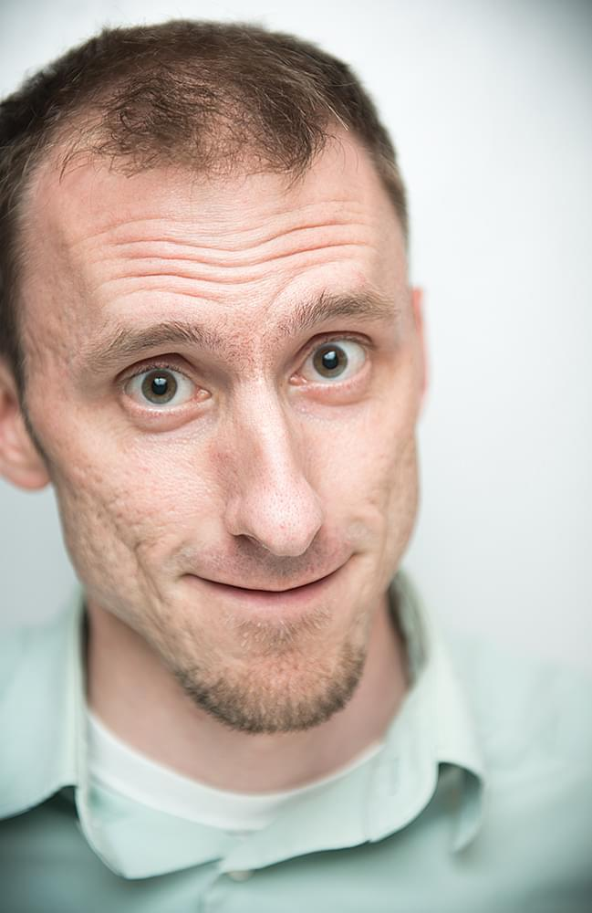

I grew up learning valuable life skills from two older brothers such as DOS commands and how to kick a soccer ball. I enjoyed the luxury of attending the elementary school of which my father was principal. I gardened, cried when my cats died and wanted to be a teenage mutant ninja turtle.
High school exposed me to the two interests with which I have devoted much of my life: photography and coding. I developed a simple point of sale program in BASIC for an imaginary pizza joint and spent hours in the school's darkroom watching silver coalesce into an image.
Initially I chose coding as the interest I wanted to turn into a career. But, I had not matured out of the timid child I was. After a year as a computer science major I switched to studio art (photography). This degree lead to a job at the Columbia Museum of Art where I began as a preparator (art handler). Somewhere between installing Renoirs, Monets and other incomprehensibly valued artwork, I started working on the museum's website. This started me back on the track I left as a college freshman. My tenure lasted about 9 years but I still have a foot in the door helping with the technical side of things of TAP into CMA.
Currently I'm living in Brooklyn. After nearly 3 years of working across the East River in Manhattan at a nonprofit called EcoHealth Alliance as a Front End Developer / Designer / Photographer / Videographer, I took a remote job as interface designer & developer at Green River, a software development company based in Southern Vermont.
One of my goals in day-to-day life is to leave whatever I work on, contribute to, or exist in better than I found it. It's my hope that through my professional work and by more simple acts like volunteering or picking up trash on the trail, I achieve this goal.